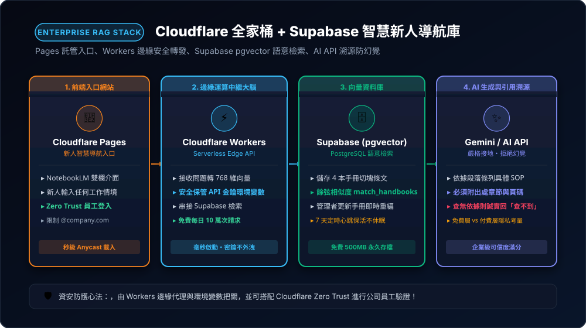
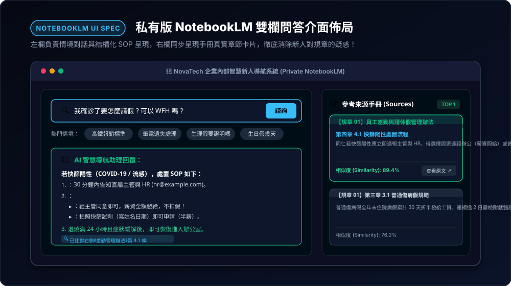
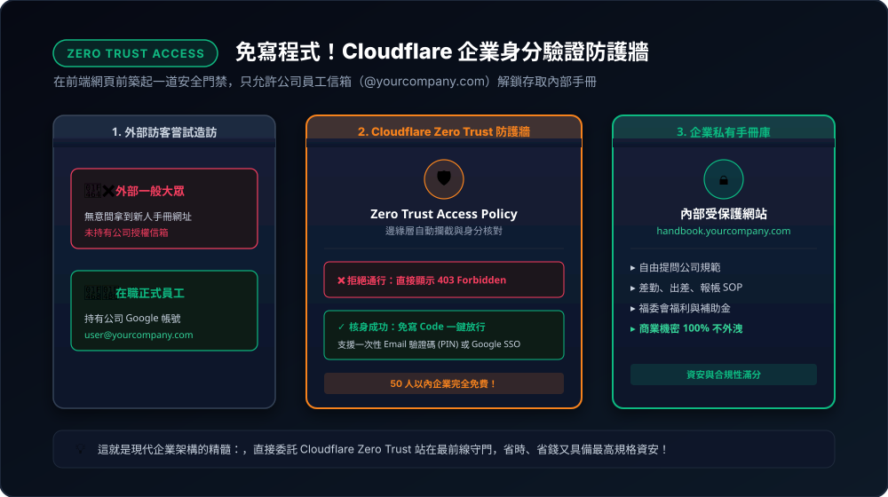

企業級 AI 知識庫實戰：Cloudflare 全家桶 + Supabase 打造新人智慧導航庫
告別散亂在各處的員工守則與作業 SOP！本章採用全美最具實戰公信力的現代雲端技術堆疊：「Cloudflare Pages (前端) + Cloudflare Workers (邊緣後端) + Supabase (pgvector 向量資料庫) + AI API」，全程由 Antigravity 協作引導，打造一套如同「企業私有版 Google NotebookLM」的智慧問答系統——安全、毫秒反應、精準附帶手冊章節出處，查無依據絕不瞎猜！
11-1 全端架構解析：Cloudflare Pages + Workers + Supabase + AI API
新職員進公司，面對「差勤規章、請假手續、報帳規定、資安守則」散落各處，往往手足無措。我們整合這套四大核心技術，建立完整的企業知識庫閉環：

Pages 快速載入前端門面、Workers 邊緣安全代理、Supabase 高效向量檢索、AI API 溯源生成與防幻覺。
🧩 4 大組件分工職責：
- Cloudflare Pages（前端入口）：放置新人智慧導航網站，極速載入、雙欄排版、提供熱門情境問題與來源查看卡片。
- Cloudflare Workers（邊緣安全大腦）：處理使用者的提問、將問題轉為向量、呼叫 Supabase 檢索、組合 Prompt 調用 AI API；所有 API Key 放在後端環境變數，前端完全看不到任何機密金鑰！
- Supabase（PostgreSQL + pgvector）：存放 4 本企業手冊的切塊內文、章節出處與 768 維語意向量，負責以餘弦相似度在幾毫秒內抓出最相關段落。
- AI API（Gemini / LLM）：根據檢索出來的手冊內容條列具體回答，並強制標註出處手冊與章節；找不到依據時堅決回覆「目前查不到」，徹底避免模型自行瞎猜。
為什麼選 Supabase 而非 Cloudflare Vectorize？
- 「內文與向量一體化」 vs 「純索引分開存」：Supabase 是全功能關聯資料庫，完整文字、章節標籤與 768 維向量都存在同一筆記錄，一趟查詢直接回傳內文；而 Vectorize 只存向量數值不存原始長文字，查詢後還必須二次撈取 D1 或 KV，架構相對繁瑣。
- 混合檢索（Hybrid Search）：Supabase 支援全文關鍵字檢索 + 語意向量雙軌搜尋，處理規章中的「法規代號、數字天數」精準度最高。
- 視覺化後台（Web GUI）：Supabase 內建如 Excel 般的資料表檢視器與 SQL 編輯器，除錯與修改手冊段落極度直觀。
Workers 所指的又是什麼意思？
- 邊緣無伺服器計算（Serverless Edge Compute）：不同於傳統租用單一主機，Workers 程式碼直接運行在全球 330+ 城市的邊緣機房，離員工最近、0 毫秒冷啟動極速反應。
- 安全總門衛（金鑰不落地）：Gemini API Key 與 Supabase 密鑰存放在 Workers 後端環境變數中，瀏覽器完全無法窺探，杜絕被盜用風險。
- RAG 管線編排大腦：負責接收問題 ➔ 轉向量 ➔ 查資料庫 ➔ 組裝防幻覺提示詞 ➔ 調用 AI ➔ 整合回傳的前後端中樞。
11-2 知識庫核心：Supabase 建立 pgvector 與 4 本手冊切塊向量化
我們使用在專案目錄下 handbooks/ 資料夾準備好的 4 本真實企業手冊（差勤管理、出差報銷、資訊安全、福委會補助）。
🗄️ 步驟 1：在 Supabase SQL Editor 執行一鍵建表
登入 Supabase 後台，在 SQL Editor 貼上標準 SQL 語法：
-- 1. 開啟向量擴充
create extension if not exists vector;
-- 2. 建立手冊知識庫資料表
create table handbook_documents (
id bigserial primary key,
content text not null, -- 手冊切塊文字
metadata jsonb not null, -- 出處標籤（{"doc": "差勤管理", "section": "4.1 快篩陽性"}）
embedding vector(768) not null -- 768 維語意向量
);
-- 3. 建立餘弦相似度檢索預存程序
create or replace function match_handbooks (
query_embedding vector(768),
match_count int default 4
) returns table (
id bigint,
content text,
metadata jsonb,
similarity float
) language plpgsql as $$
begin
return query
select
handbook_documents.id,
handbook_documents.content,
handbook_documents.metadata,
1 - (handbook_documents.embedding <=> query_embedding) as similarity
from handbook_documents
order by handbook_documents.embedding <=> query_embedding
limit match_count;
end;
$$;
scripts/ingest.js：1. 讀取
handbooks/ 目錄下的 4 份 Markdown 檔案。2. 依照章節標題進行切塊（每塊約 300~450 字，重疊 50 字保持語意連續）。
3. 保留 metadata（包含手冊名稱、章節標題）。
4. 呼叫 Google Gemini Embedding API (
text-embedding-004) 取得 768 維向量。5. 使用
@supabase/supabase-js 將切塊與向量批次寫入 handbook_documents 資料表。請提供完整代碼，並說明如何設定 Supabase URL 與 Service Role Key！"
11-3 邊緣運算大腦：Cloudflare Workers 處理向量檢索與環境變數
為了確保安全性，瀏覽器前端絕對不能放 Google API Key 或 Supabase 密鑰！我們讓 Cloudflare Workers 擔任最堅固的中繼站。
🔒 在 Cloudflare 後台設定安全環境變數（Secrets）：
在 Workers 專案的「Settings」➔「Variables and Secrets」加入以下變數（加密儲存）：
SUPABASE_URL：你的 Supabase 專案網址（如https://xyz.supabase.co）。SUPABASE_ANON_KEY：Supabase 前端讀取公開金鑰。GEMINI_API_KEY：Google AI Studio 申請的 API Key。
functions/api/ask.js）：【核心運作邏輯】：
1. 接收前端 POST 傳來的新人情境問題
{ question }。2. 使用
env.GEMINI_API_KEY 呼叫 Google Embedding API，將提問轉為 768 維向量。3. 呼叫 Supabase 的 RPC 函式
match_handbooks，檢索出相似度最高的 Top 3 手冊段落。4. 若最高相似度低於門檻（例如 < 0.65），直接回傳：『很抱歉，目前在內部規章中查不到相關規範，請直接洽詢人資處 (hr@example.com)！』避免 AI 瞎猜。
5. 若有相符依據，組裝 System Prompt 呼叫 Gemini 1.5 / 2.0 Flash 條列回答，並在文末附上【參考來源】清單。
6. 回傳 JSON：
{ answer, sources: [{ doc, section, similarity }] }。請提供完整、乾淨、附註解的代碼！"
11-4 前端體驗：雙欄 NotebookLM 介面與嚴格防幻覺工程
新人系統好不好用，前端體驗佔了一半！我們請 Antigravity 打造如同 Google NotebookLM 的雙欄式介面：

左欄來源手冊清單與熱門問題捷徑，右欄即時對話並標註手冊引用標籤。
🛡️ 絕不幻覺！AI API 的系統提示詞（System Instruction）設計：
你是一位嚴謹的企業內部人資與規章專員。
你的任務是根據提供的【手冊段落依據】回答新進員工的問題。
【嚴格遵守原則】：
1. 僅能依據提供的參考段落回答，嚴禁使用未提及的外部常識或擅自揣測！
2. 若參考段落中找不到明確規範，請堅決回答：
「目前在員工手冊庫中查不到相關規範，建議請直接洽詢人資部窗口（分機 #8801）或管理部。」
3. 答案必須以繁體中文（台灣習慣用語）清晰條列說明。
4. 每點回答結尾必須加上【引用來源標籤】，例如：[來源：差勤管理辦法 - 第4條]。
11-5 企業安全第一步：Cloudflare Zero Trust Access 零程式碼員工門禁
「手冊裡有出差報銷金額與內部資安準則，如果網址外洩被外人看到怎麼辦？」傳統做法要寫登入、註冊、Token 驗證...非常複雜。但在 Cloudflare 上，完全不需要寫一行程式碼！

前 50 名員工永久免費，直接阻擋外部訪客，只有驗證過的企業信箱能進入系統。
🚀 3 步驟啟用企業門禁：
- 進入 Cloudflare Zero Trust 後台 ➔ 點選「Access」➔「Applications」。
- 選擇「Add an Application」➔「Self-hosted」，輸入你的 Pages 網站網址。
- 設定原則（Policy）：選擇 One-time PIN（一次性 Email 驗證碼），規則設定為
Emails ending in: @yourcompany.com（限公司信箱登入）。
✅ 設定完成後，任何外人連上網站都會被強制攔截在登入畫面；只有輸入公司信箱收到驗證碼後，才能進入新人手冊庫！
11-6 免費方案限制與企業資料隱私條款決策
本套架構非常適合以「完全免費」開始試行 POC，但在正式推行給全公司使用前，必須知悉以下限制與資料條款：
⚖️ 免費版使用限制與防範策略：
- Cloudflare Workers 限制：免費版每日上限 100,000 次請求，每次運算 CPU 時間上限 10ms（等待 Supabase 與 AI 回傳的 I/O 時間不計入），對數百人的中小企業試行絕對綽綽有餘。
- Supabase 免費版休眠機制：專案若連續 7 天完全無任何活動，會自動進入休眠暫停（Paused）。
💡 解決方案：利用 Cloudflare Workers 免費的 Cron Trigger（排程觸發器）或 Google Apps Script，設定每天半夜自動向 Supabase 執行一次輕量 SELECT 查詢（心跳 Ping），即可永久保持活躍！ - Supabase 免費備份限制：免費版不提供自動日備份下載。建議利用 Antigravity 產出本機備份腳本，定時匯出手冊資料。
🔒 企業機密關鍵：Gemini API 免費層 vs 付費層的隱私條款
| 方案層級 | 資料隱私與訓練規範 (Data Privacy) | 企業建議與適用情境 |
|---|---|---|
| Gemini API 免費層 | 提交之內容可能由 Google 經過匿名化人工審閱並用於改善模型產品。 | 適合內部 POC 概念驗證、測試非機密之一般差勤與福利手冊。 |
| Gemini API 付費層 (Pay-as-you-go) | 零數據保留（Zero Data Retention），明確承諾不使用客戶資料訓練模型。 | 正式全公司上線首選！即使全公司每天使用，每月通常僅花費幾美元，享有完整法務保障。 |
💡 黃金策略：先以免費方案搭建與試行，驗證檢索品質與同仁反響；確認成效良好後，再在 Google Cloud 綁定信用卡切換至付費 API，並設定每月預算上限（例如上限 10 美元），既能兼顧荷包，又能享有企業最高規格資安保障！
你已經完整掌握了全美矽谷大廠最熱門的「全端邊緣運算 + 向量資料庫 + LLM 落地 + 零信任資安門禁」！這套實戰專案不僅能直接應用於你的公司內部，更能成為你個人履歷上極具競爭力的高難度商業作品！